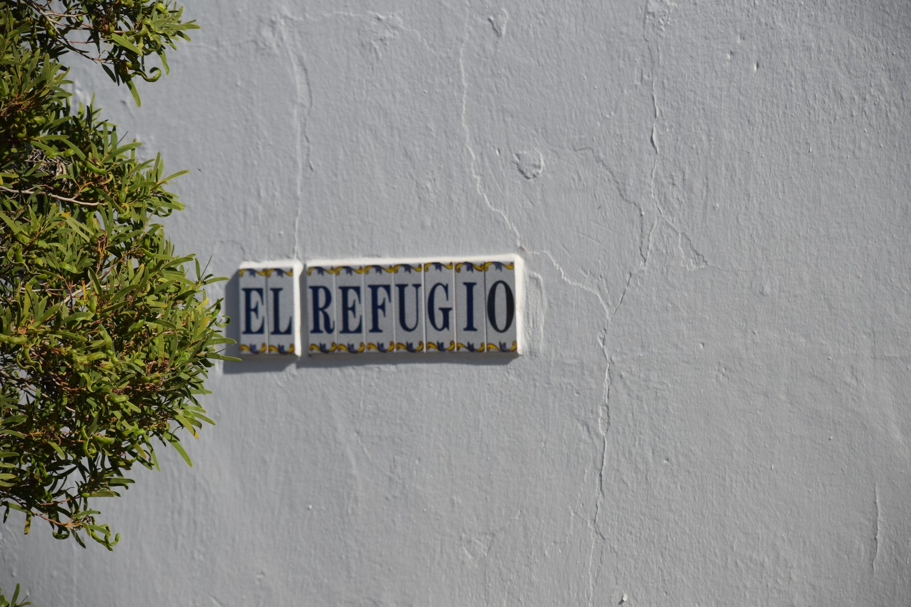
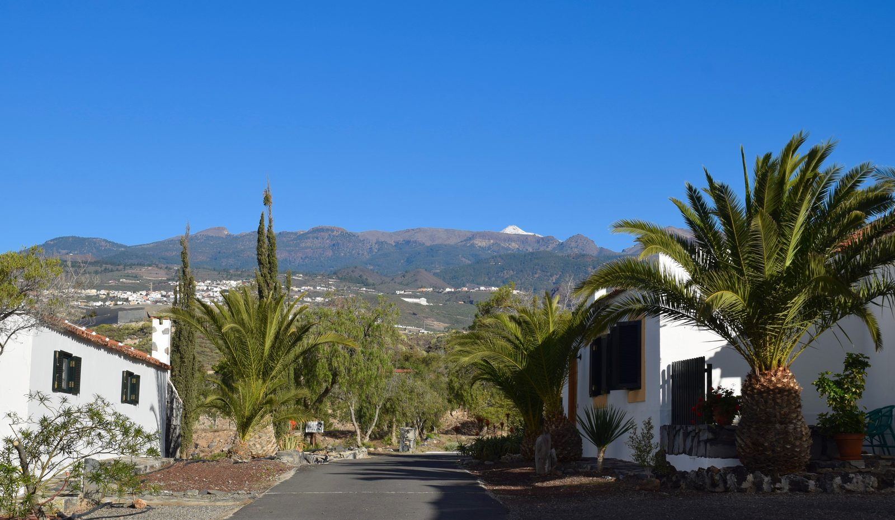
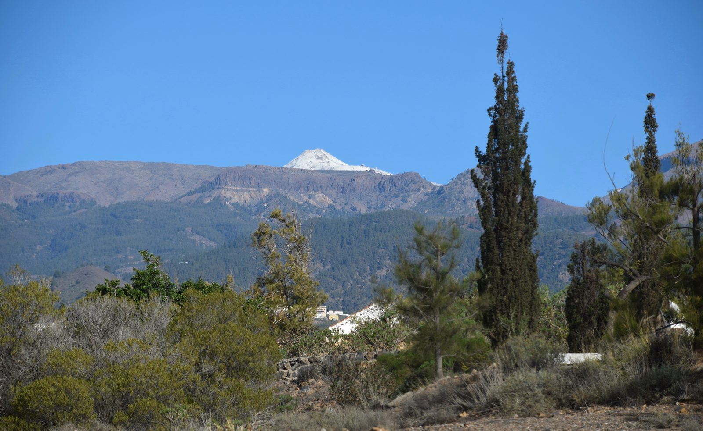
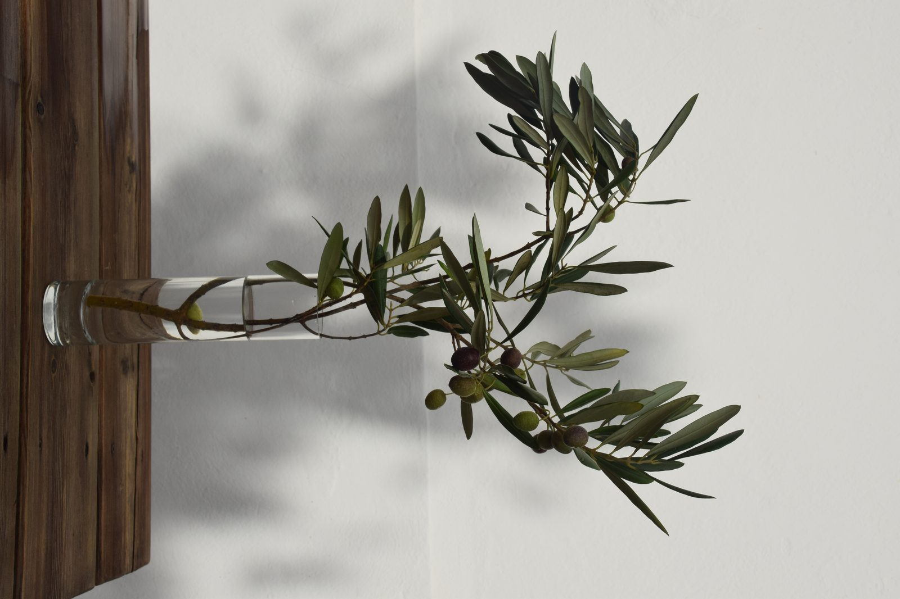
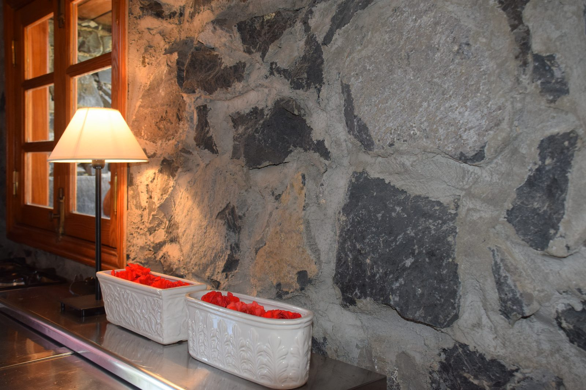
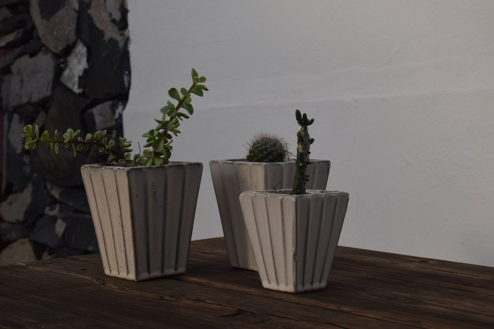
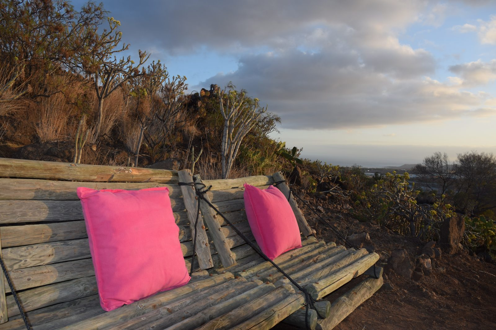

Ubicada en el corazon de Playa de Las Americas, esta escuela de surf iconica es el punto de referencia ideal para vivir el surf en Tenerife de forma autentica, segura y divertida. Las clases estan pensadas para todos los niveles.
Desde el primer contacto con el agua hasta el perfeccionamiento de maniobras avanzadas, el equipo de Lo Squalo acompana a cada alumno con una metodologia progresiva, clara y adaptada a sus necesidades. El objetivo no es solo aprender a surfear: es sentir la conexion real con el oceano.
Maximo 6 alumnos por instructor. Atencion personalizada garantizada en cada sesion, con seguimiento real del progreso individual.
Equipo certificado, multilingue (ES, IT, EN, DE), con anos de experiencia en las olas de Tenerife y formacion en rescate acuatico.
Tablas de foam y shortboard, traje de neopreno, leash y seguro incluidos en todas las clases. No necesitas traer nada.
Sistema de aprendizaje estructurado en fases: teoria en arena, ejercicios de equilibrio, primeras olas y perfeccionamiento. Seguro, claro y eficaz.
Aprende donde viven el surf los locales. Una escuela con alma, no una atraccion turistica. La cultura del surf se respira en cada sesion.
Hasta 6 personas. La opcion mas popular. Aprendes con otros, te motivas y vives el surf en comunidad.
Maxima atencion, progreso rapido. Ideal para quien quiere resultados en poco tiempo o tiene necesidades especificas.
2 a 3 personas. El equilibrio perfecto entre precio y atencion. Ideal para parejas o amigos.
Paquetes de 5 o 10 sesiones con precio especial. Para quien quiere comprometerse con el surf en serio.
Tablas, neoprenos y accesorios disponibles para surfers autonomos. Por horas o por dia.






Tanto si es tu primera vez en el agua como si quieres dar el siguiente paso, la Surf School de Lo Squalo es el lugar donde empieza tu historia con el surf en Tenerife. Duracion media por sesion: aproximadamente 2 horas.
Contactanos para reservar tu clase
💬 Contactar por WhatsApp